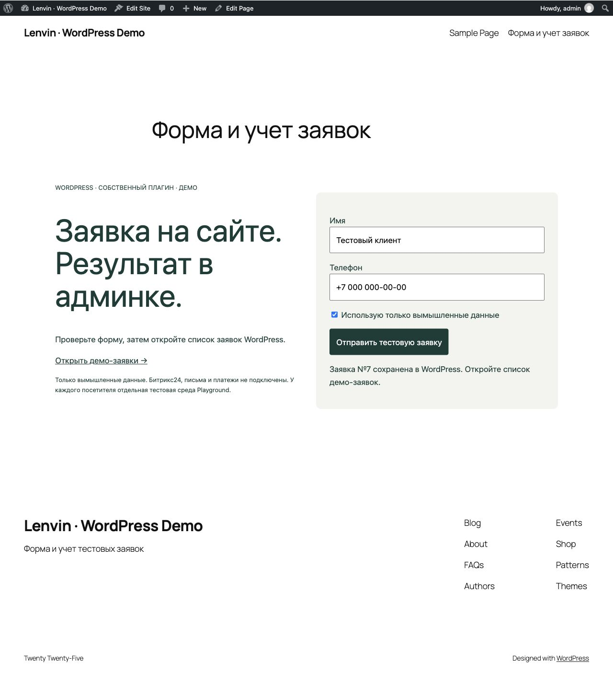
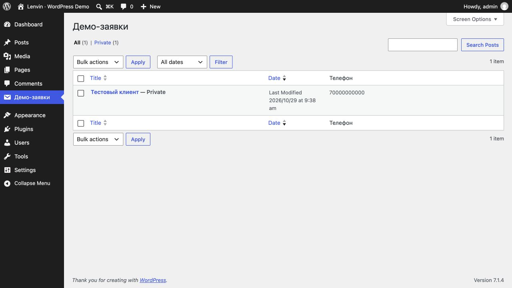

LENVIN / Студия ЕленыWORDPRESS · СОБСТВЕННЫЙ ПЛАГИН · ДЕМОНСТРАЦИЯ
Заявка на сайте.
Результат в админке.
Работающая форма, серверная проверка данных и приватный список тестовых заявок в WordPress.
Запустить WordPress-демо ↗Скачать плагин
Первый запуск может занять несколько минут. Playground работает в вашем браузере; это отдельная тестовая среда. Используйте только вымышленные данные.
Проверьте за минуту
- Запустите WordPress-демо и дождитесь загрузки.
- Оставьте тестовые имя и телефон, отметьте подтверждение и отправьте форму.
- Откройте «Демо-заявки» — запись появится в админке.
- Повторите отправку без изменения полей — номер заявки останется прежним.
Форма на WordPress

Заявка в админке

Что реализовано
- Собственный плагин и shortcode [lenvin_demo_form].
- REST endpoint с проверкой прав администратора и WordPress nonce.
- Серверная валидация и экранирование вывода.
- Приватные записи заявок и колонка телефона в админке.
- Ключ повторной отправки и блокировка кнопки на время запроса.
Границы примера
Это новый демонстрационный проект, не клиентский кейс. Битрикс24, email и платежи не подключены. Форма предназначена для авторизованной тестовой сессии Playground, не для публичного сбора персональных данных. Перед использованием на реальном сайте потребуются настройка доступа, антиспам и политика обработки данных.
Код плагина · Blueprint запуска · Инструкция и проверки